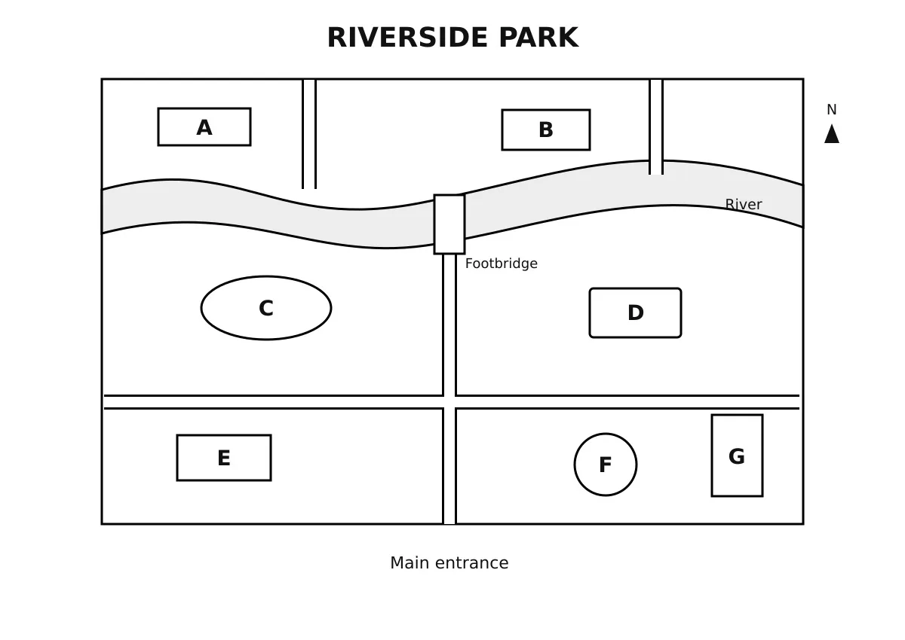

08
IELTS · Section 2 · 5 map-labelling tasks · tour-guide format
⏱ 25-35 minIn the real IELTS Listening test, Section 2 is often a tour guide walking visitors around a new place. You get a simple map with 5–7 lettered points and a list of names. Your job is to match each name to a letter — while you listen. You hear the recording once only.
Below are 5 original practice tasks in the standard IELTS format. Work through them in order — they get slightly harder. Target: 5 / 7 on Task 1, build up to 6 / 7 by Task 5.
◆ IELTS listening · Section 2 · map labelling · 5 tasks
IELTS mini-lesson · direction signals — tap each phrase to hear a native speaker say it. These are the words the tour guide uses to tell you WHERE on the map something is:
«straight ahead of you…» → directly opposite the entrance
«just past the café…» → immediately after that landmark on the same path
«opposite the entrance» → on the other side of the path / square
«in the far corner» → at the furthest point on the map
«next to the big tree» / «right beside…» → immediately touching
«a short walk down the path» → along the same path for a bit
Trap: guides often correct themselves — «Actually, let me correct that — the picnic area is here, not there.» Always wait for the final mention.
Task 1 · Riverside Park · tour-guide intro (~60 s)
A guide welcomes a group to a brand-new park. Listen once. Signposts: «straight ahead of you…», «opposite…», «a short walk further up…», «in the far corner».

{this.style.display='none';this.nextElementSibling.style.display='grid'}">Match each facility to a letter A–G on the map. Each letter is used once.
Letters on the mapABCDEFG
1
Café
2
Information centre
3
Bike hire
4
Children's playground
5
Picnic area
6
Boat jetty
7
Birdwatching hide
Task 2 · Westhaven Community Garden · gardener introduces visitors (~60 s)
A volunteer gardener welcomes a tour group. Signposts: «right beside me, on the right as you come in», «over on the far left», «halfway back on the right».

Match each garden feature to a letter A–G.
Letters on the mapABCDEFG
1
Tool shed
2
Herb garden
3
Polytunnel
4
Compost area
5
Children's garden
6
Pond
7
Apple orchard
Task 3 · Summerfield Farmers' Market · market manager intro (~60 s)
The manager walks shoppers through the stalls. Signposts: «right here at the entrance», «on your left» / «directly opposite on your right», «far right beside the playground».

Match each stall to a letter A–G.
Letters on the mapABCDEFG
1
Information tent
2
Bread & pastry stall
3
Cheese counter
4
Vegetable stalls
5
Flower corner
6
Coffee van
7
Children's workshop tent
Task 4 · Oak Hill University Library · staff introduces new students (~65 s)
Harder: moves across two floors + a courtyard. Signposts: «straight in front of you», «upstairs… on your left / on your right», «behind the main bookshelves», «in the far corner under the oak tree».

Match each area to a letter A–G.
Letters on the mapABCDEFG
1
Reception desk
2
Self-checkout machines
3
Silent study room
4
Group study room
5
Computer lab
6
Coffee bar
7
Garden reading area
Task 5 · Blackwater Zoo · tour leader before the walk (~65 s)
Hardest: full park layout with 7 enclosures. Signposts: «on your left», «straight ahead, past the penguins», «just to the right of…», «on the far right» / «on the far left», «in the middle at the back».

Match each zoo area to a letter A–G.
Letters on the mapABCDEFG
1
Ticket office
2
Penguin pool
3
Monkey Island
4
Reptile house
5
Butterfly garden
6
Elephant enclosure
7
Education centre
- «Which signpost phrase ambushed you most often? Replay the audio and listen only for that one.»
- «Pick ONE facility from any task and describe its position back to me from memory — in two sentences.»
- «Compare Task 1 and Task 5 — which was harder, and WHY (the map, the vocab, or the direction phrases)?»